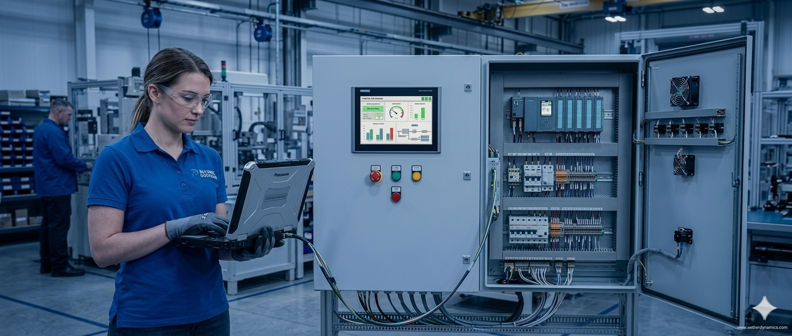

System Familiarisation
Understand the existing control architecture, equipment, sequence and operational behaviour.
Useful when taking over an existing system, supporting a project or preparing for future changes.


SOLUTIONS
Engineering that starts with the system you have — understanding existing automation, improving performance, integrating new technology and moving your automation forward.
WHAT WE DO
Automation systems often evolve over time. New equipment, modifications and operational requirements can create complexity across controls, networks, safety and data.
We work with existing systems to understand how they operate, identify practical improvements and help introduce new technology where it adds value.
OUR SOLUTIONS
Understand the existing control architecture, equipment, sequence and operational behaviour.
Useful when taking over an existing system, supporting a project or preparing for future changes.
Improve existing automation through targeted hardware, software and control system upgrades.
The focus is on practical improvements while considering existing equipment and infrastructure.
PLC programming, modifications, sequencing, diagnostics and control logic development.
From individual machines to larger interconnected automation systems.
Connect control systems, equipment, safety devices and industrial networks into a coordinated system.
Integration work considers both control functionality and the surrounding system interfaces.
Improve visibility of automation systems through operator interfaces, alarms, monitoring and data.
Turn system information into useful operational insight.
Support the transition from engineering and software into tested and operational automation systems.
Includes testing, diagnostics, fault finding and system verification.
Investigate automation problems and identify practical opportunities to improve system performance.
Use system behaviour and available data to help identify recurring issues, inefficiencies and improvement opportunities.
Build your team's understanding and confidence in operating, maintaining and supporting automation systems.
Practical training focused on the actual system, technology and requirements of your operation.
Every system is different. Our approach is to understand the application first, then develop practical engineering solutions around the actual requirements.
HAVE A PROJECT?
Tell us what you're working with and what you'd like to improve.
Discuss your system →